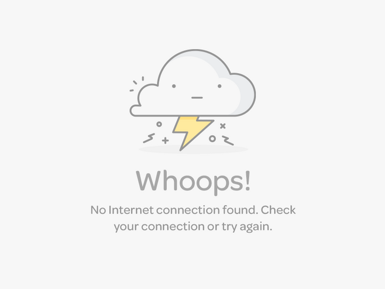

<!--
  Generated template for the NoconnectionPage page.

  See http://ionicframework.com/docs/components/#navigation for more info on
  Ionic pages and navigation.
-->
<ion-header>

  <ion-navbar color="hcolor">
    <ion-title >No Connection</ion-title>
  </ion-navbar>

</ion-header>


<ion-content padding>
   
</ion-content>
